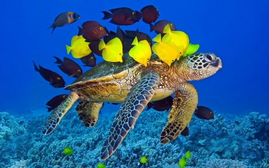
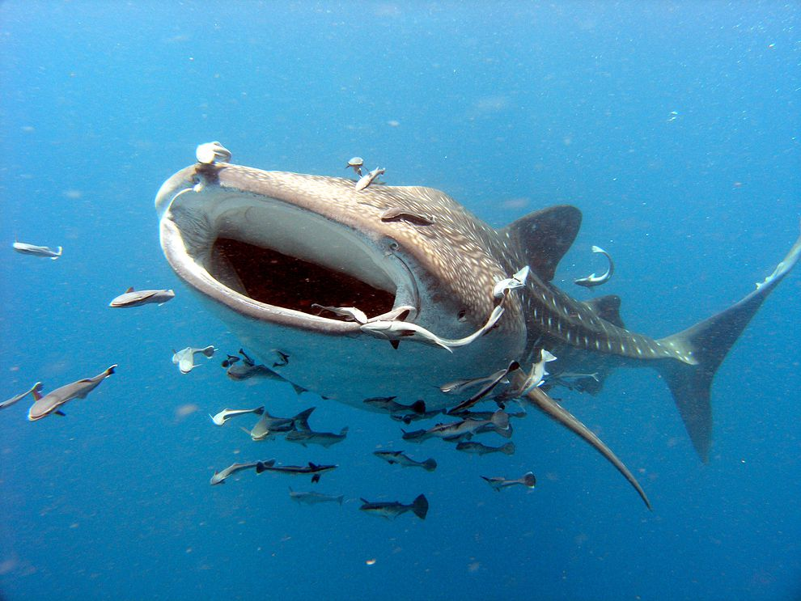

Simbiosis (dari bahasa Yunani συμβίωσις "hidup bersama", yang berasal dari kata σύν "bersama" dan βίωσις "hidup") adalah semua jenis interaksi biologis jangka panjang dan dekat antara dua organisme biologis yang berbeda, baik itu mutualisme, komensalisme, atau parasitisme. Organisme yang terlibat tersebut, masing-masing disebut simbion, bisa berasal dari spesies yang sama atau berbeda. Pada tahun 1879, Heinrich Anton de Bary mendefinisikannya sebagai "organisme berbeda yang hidup bersama".
Simbiosis dapat menjadi sesuatu yang obligat, yang berarti satu atau kedua simbion sepenuhnya bergantung satu sama lain untuk bisa bertahan hidup, atau fakultatif (opsional) ketika mereka umumnya dapat hidup mandiri.
Simbiosis juga diklasifikasikan berdasarkan keterikatan fisik, yaitu:
1. Simbiosis Konjungtif, yaitu simbiosis yang organismenya memiliki persatuan tubuh.
2. Simbiosis disjungtif, yaitu simbiosis di mana mereka tidak bersatu.
Ketika satu organisme hidup di organisme lain seperti Mistletoe (tumbuhan parasit), disebut ektosimbiosis, ketika satu partner hidup di dalam jaringan organisme lain, seperti Symbiodinium pada koral maka disebut endosimbiosis.

